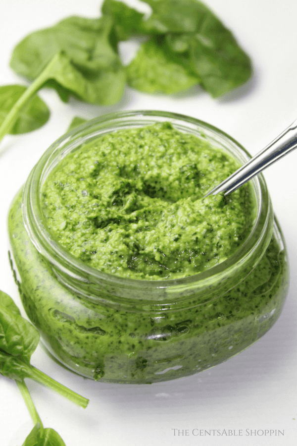

Spinach Pesto

Easy Spinach Pesto
An easy and flavorful spinach pesto recipe that is quick to whip up and a great way to use an abundance of garden-fresh spinach!
Ingredients
- 5 cloves garlic
- 2 C spinach fresh
- 1/4 C. olive oil or avocado oil
- 1/2 C pine nuts or pecans, walnuts, almonds
- 1 tsp sea salt
- 2 tsp lemon juice
- 1/4 C basil
Steps
- Put all items (with the exception of the parmesan cheese) in the food processor.
- Process until combined - continually scraping down the sides.
- Add additional oil as needed.
- Dress with parmesan cheese.
- Add a little bit if oil to the top of the jar to keep it fresh while you store the pesto, and keep the finished pesto in the refrigerator.